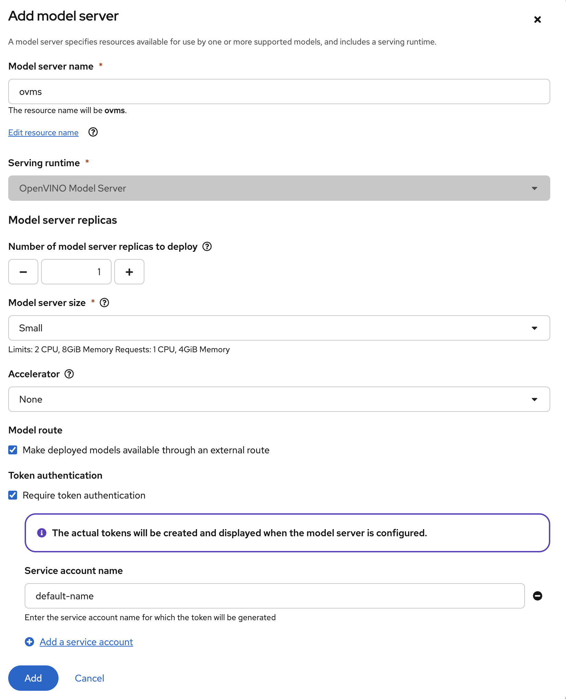

Data Science
As data scientists, we have been given a task to provide a robot the understanding of what a red hat (a fedora) looks like, correctly identify it and act on the object detection. You will be fine tuning an already existing object dection model from the YOLO-family (You Only Look Once), on a set of fedora images publicly available. To achieve this we will use OpenShift AI, an extension to OpenShift that provides a platform for Data Scientists to work with their favourite tools and libraries
Instantiate Workbench
Let’s login into OpenShift AI
-
Login into the OpenShift Console with:
-
username:
team-1 -
password :
secret-password
-
-
Click on the top right menu with the squares and select OpenShift AI to access the OpenShift AI Dashboard
-
Click on Login with OpenShift
-
Login with the same credentials as before
This is the main Console where all Data Science related projects and assets are managed.
-
In the left menu click on Data Science Projects to see all available Data Science Projects
-
A project has already been prepared for you to work in
-
Click on the project
team-1-ai
As data scientists, we are in need of an interactive developement environment(IDE) to do our programming. One of the most common one (and provided by OpenShift AI) is JupyterLab. Let’s create a new JupyterLab Workbench in our data science project and get started:
-
Click on Create Workbench
-
Enter these fields :
-
Name :
fedora-detection -
Image selection:
Object Detection -
Deployment size: 'Small'
-
Cluster storage
-
Create new persistent storage:
-
Name :
fedora-detection
-
-
-
Click on Attach existingconnections
-
Select
workbench-bucketconnection
-
-
-
Click Create Workbench
|
Wait until the Status of the Workbench is changed from "Starting" to "Running" 
|
-
Click on the Open link, next to the
fedora-detectionWorkbench to open the JuypterLab Workbench -
Login with you OpenShift credentials and allow selected permissions
The first thing we notice when logging into our workbench is that it’s quite empty. If this is your first time seeing JupyterLab, take a couple of minutes to look around! But don’t worry, we are experienced data scientists who know the importance of documentation, version handling and reproducability. Therefore, in JuypterLab we are going to clone a complete JuypterNotebook to get started with our object detection project:
-
In the menu on the left, click on the Git icon
-
Click on Clone a Repository
-
Enter the Git Url to the notebooks repo that has been prepared for you:
https://gitea.apps.example.com/team-1/object-detection-notebooks.git -
Click on Clone
-
On the left side in the menu click on the Folder icon.
Next, we will train our model on the basis of a Yolo5 Image Detection model to identify fedoras by providing sample images. The whole training process will run in a Pipeline leveraging OpenShift resource scaling. Sample images will be downloaded automatically and after the training, the model will be exported in onnx format to your S3 ODF (OpenShift Data Foundation) bucket. In this format we can deploy it to an inferencing service on OpenShift AI and serve it to our application.
-
In JupyterLab navigate to the directory
object-detection-notebooks/model-training.
Notice that we now have a couple of python scripts containing code to execute the individual steps of the pipeline, a configuration.yaml file as well as pipeline definition itself. By clicking on the different scripts, you can view and edit them in your IDE. However, we are specifically interested in the pipeline definition, so let’s open it:
-
Double click on
model-training-cpu.pipeline
Have a look at the pipeline steps:
-
Step 1 : Downloading a set of sample images with labels and coordinates for our fedora class from the OpenImages website.
-
Step 2 : Preparing the class labels and training sets
-
Step 3 : Running the actual training on a Yolo 5 Model
-
Step 4 : Converting the model format to onnx
-
Step 5 : Uploading it to an ODF S3 bucket
The pipeline can be configured to download and train on specifc image object class (e.g. Fedoras).
-
To configure a class, open the file called
configuration.yaml.
You will see that an image class is already defined ('Laptop',). Looking for a new Laptop is great but we want to find red hats today.
-
Change the
namesarray to look like this
names: ['Fedora',]-
Save the file by pressing ctrl+s
This image class is now mapped to the class number 0. This image class is now mapped to the class number 0.
-
Now back in the
model-training-pipeline, on the top menu on the left click on the play icon
-
Keep the default settings and click on OK
This will submit the pipeline to OpenShift to run the training
-
Switch to the OpenShift AI tab in your browser
-
Select your Data Science Project team-1-ai
-
Select Pipelines tab
-
Expand the model-training-cpu Pipeline
-
Click on the three dots at the end of line
-
Click on View runs

-
Click on model-training-cpu-xxxxx at the Run column

-
Click on the currently running pipeline
This will show the running steps of the pipeline

With the default settings, the Pipeline will run around 15 minutes. Let’s use the time to deploy another Workbench that we can use to inspect our S3 bucket and see our model when ready.
-
In your project go on the tab Workbenches
-
Click on Create workbench and enter these values
-
Name
s3-browser -
Image Selection
-
S3 Browser
-
-
Cluster storage
-
Create new persistant storage
-
s3-browser
-
-
-
Connections
-
Click Attach existing data connection
-
Select
workbench-bucket
-
-
-
-
Click on Create Workbench
-
When the Workbench hast started click the Open link
-
Login in with your OpenShift credentials
-
username: team-1
-
password : secret-password
-
-
Accept the disclaimer
The browser will show you the contents of your bucket. Except for a folder called backup it should be pretty empty at the moment.
Now is a good time to grab some coffee, or if you are curious read up on the architecture and requirements of the Yolov5 model family. There are different sizing versions of the Yolov5 and compute requirements. In the pipeline start form you could actually change the model version.
Once the pipeline has run (Check the run) successfully the final model named latest-version.onnx will be saved in your S3 bucket. Have look in your S3 Browser. You should see a new folder models containing your model.
Model Serving
You now have a trained model for object recognition. To use the model we will deploy it into OpenShift AI Model Serving, which will make it available via an API.
Model Runtime
First we need to configue a model server:
-
Click on Data Science Projects in the main menu on the left and make sure you have selected your
team-1-aiagain -
Under the section Models click on Add model server
-
Model server name :
ovms -
Serving runtime :
OpenVINO Model Server -
Make deployed models available … :
Check -
Require token authentication :
Check-
Service account name :
default-name
-
-
Keep the rest of the settings as is
-
Click Add

Deploy Model
-
Click Go to Models next to your just created model server
-
Click Deploy model
-
In the form enter
-
Model name:
fedora-detection-service -
Model framework (name-version):
onnx-1 -
Existing data connection:
workbench-bucket -
Path:
models/model-latest.onnx -
Click Deploy
-
|
Wait for the server to start. It may take a bit before the model server is able to answer requests. If you get an error in the following calls, just wait a few seconds and try again. |
Model Testing
-
Copy the inference endpoint URL that is published through an OpenShift Route

-
Copy the token of the endpoint
-
Back in your JupyterLab Workbench in the
object-detection-notebooksdirectory, open theonline-scoring.ipynbnotebook -
Look for the variables
prediction_urlandtokenprediction_url = 'REPLACE_ME' token = 'REPLACE_ME' -
Paste the inference endpoint URL and the token into the placeholders
-
Run the full notebook (the button with the two play icons in the top menu)

-
Confirm to Restart the Kernel
You will see any identified classes with bounding boxes and confidence score at the end of the notebook.
You can test your model with different images in the sample-images folder. But even better you can upload your own images. Take some pictures with your laptop or smartphone of a fedora on the floor and upload them into the sample_images folder. Make sure you adjust the image name in image_path variable before running the notebook again. You should see some awesome detections now.
That’s it. It is finally time to handoff your amazing AI Fedora Detection service to the dev team. Make a note and use the two values prediction_url and token in your app in the next chapter.
Optional : Retrain and Redeploy Model
Perhaps you would to like to tweak and increase the detection quality of your model later on? You can rerun the Pipeline and increase the Sample Size (Number of Images used for training), epochs (Number of training iterations) and batch size.
When rerunning the pipeline, a new onnx model will be created in the S3 bucket /models folder and copied over the model-latest.onnx file. It will not automatically be deployed to the running model server!
|
To deploy the new model to the model server, we need to find out the new model filename. In the pipeline run view, click on the last task (model_upload) and look a the logs. You should see an entry similar to this:
initializing S3 client uploading model to models/model-2410151507.onnx model uploaded and available as "models/model-2410151507.onnx" uploading model to models/model-latest.onnx model uploaded and available as "models/model-latest.onnx"
In this case model-2410151507.onnx is the new model created by this pipeline run.
-
Now in your Openshift AI Project go to Models and click on the three dots next to the model
fedora-detection-service -
Change the Path value to your new model (e.g. models/model-2410151507.onnx)
-
This wil trigger a redeploy and you can now test the new model
| There is another more kube native way to update the model. You can actually change the yaml of the underlying OpenShift ressource. |
Model redeploy by editing Resource yaml
-
Go to the OpenShift Console select your project
-
In the menu on the left click on Home > Search
-
Now in the resources field enter
InferenceService -
Check InferenceService in the dropdown
-
Click on the
fedora-detection-service -
Click on YAML to edit
Look for the path entry
path: models/model-latest.onnx
and change it to your new model name
This opens up possibilities to use GitOps to configure your MLOps ressources by the way.